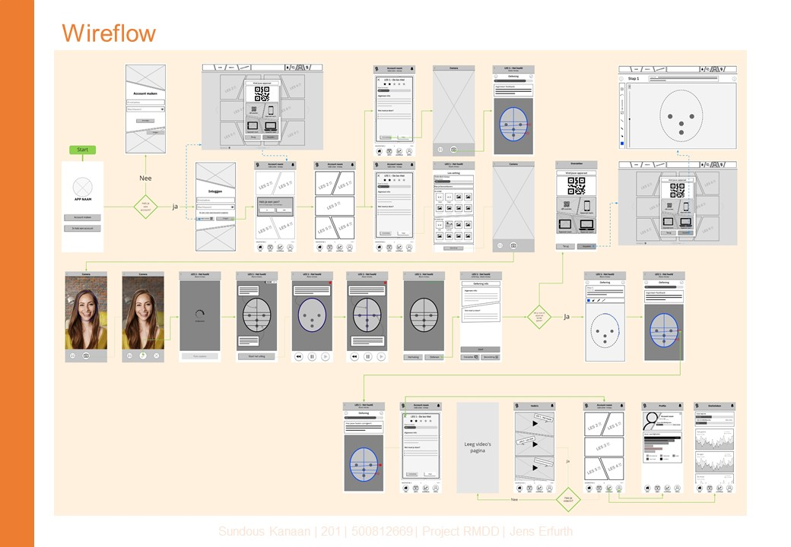
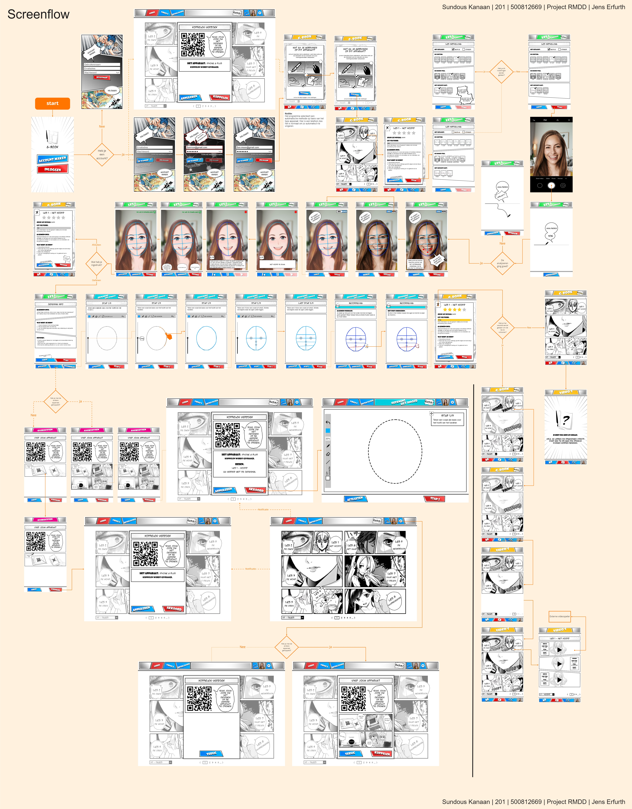

Mijn G-book programma.
Tijdens dit project ga ik een Multi-device ervaring denken en ontwerpen voor een bepaalde activiteit. Ik ga denken met name aan de gebruikersdoelen die telkens voor, tijdens en na deze activiteit belangrijk zijn, en welk device in welk stadium het meest geschikt zou zijn. In drie weken (zes lessen) ga ik een onderwerp kiezen met een focus op Multi-device ervaringen en de nodige functionaliteiten en interacties stap voor stap uitwerken tot een uitgewerkte screenflow.
Waar ik trots op ben in mijn werk:
- Het gekozen idee
Programma om te leren, hoe je een manga karakter tekent.
Ik heb het mijn eerste idee gekozen. Een app die kan een Manga karakter tekenen makkelijker kan maken voor de beginner tekenaars,
die willen leren maar ook hun eigen posities maken voor hun origineel karakters.
Mijn focus is op de beginner tekenaars om te leren, hoe een manga karakter moet tekenen, want het is een andere stijl dan de andere stijlen.
- Scenario & user requirements
Mijn definitief scenario was een scenario met te veel details, maar het was heel handig om mijn wirflow en mijn eind screen flow te maken. Het was ook duidelijk om mijn user requirements te verzamelen.
- Job story’s en screenflows
Om te leren hoe moet ik mijn flow bouwen, hebben we drie reguirements gekozen om drie Job story's te maken. Daarna zoeken op apps die deze functies gebruiken en screenflows maken om van hun te leren.
- Wireflow
Mijn wireflow was korter dan de einde screenflow maar de layot was goed als basis. Duidelijk manga stijl en de inhoud was ook goed. Natuurlijk heb ik mijn werk verbeterd volgens de feedbacks door het project, maar somige feedbacks heb ik hen verwerkt in mijn eind werk want de project tijd was evht kort en druk met te veel werk.
- Mijn Screenflows
Voor mijn screen design heb ik een Logo gemaakt met een naam van een manga tekenen pen en manga boek samen om het naam G-Book te hebben. Het was een mooie app voor mijn als een tekenen, anime en manga liefhebber, waar ik de manga en comic stijl gebruikt heb om het eind ontwerp te hebben. Ik ben erg blij met het eindresultaat en de flow die het heeft gecreëerd, want het was leuk om een Programma als dit voor mij te bouwen.
